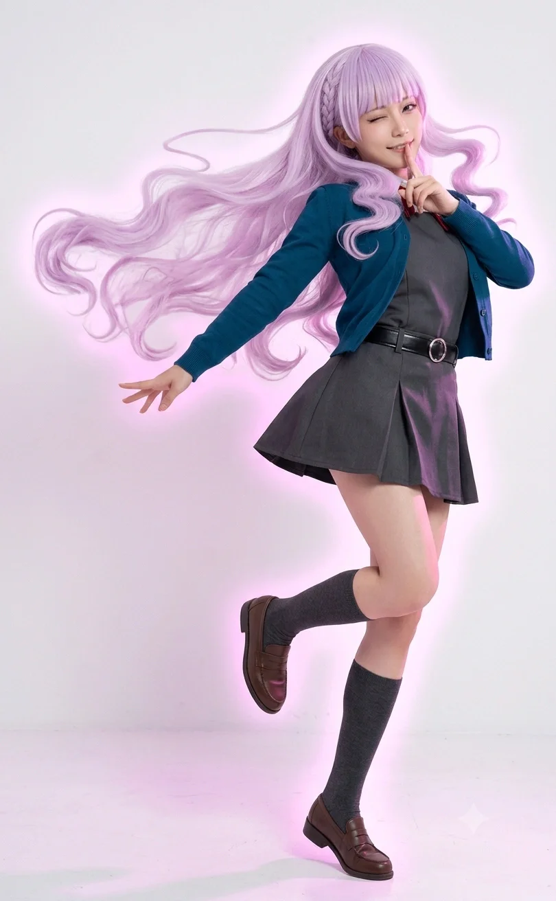

"어째서 내가 이런 곳에서 바코드를 찍어야 하는 거야! 이미와칸나이!"
- 매월 20일 초지관철 데이, 빈스마트 계산대에서
효빈광역시와 덕빈권을 장악한 향토 유통 체인 빈스마트 최영희 대표이사의 딸이자, 현재 효빈대학교 음악학과에 재학 중인 인물. 빈스마트의 '명예 마케팅 본부장' 직함을 달고 쇼핑몰 전체를 보라색 테마파크로 뜯어고친 주역이다.
어머니의 성씨가 아닌 아버지의 성씨(마씨)를 따라 '마루빈'이라는 이름을 얻었는데, 이 이름이 공교롭게도 러브 라이브! 슈퍼스타!!의 빈 마르가레테와 완벽하게 겹쳐버렸다. 외모, 츤데레 성격, 폭발적인 가창력, 심지어 입버릇("의미를 모르겠어!")과 서브컬처를 혐오하던 과거까지 마르가레테를 쏙 빼닮은 걸어 다니는 현실판 마르가레테다.
마루빈은 효빈광역시 북구 고송동에서 태어나고 자랐다. 고송동은 빈스마트의 심장부인 '고송본점'이 위치한 곳으로, 그녀는 어릴 적부터 마트 매대를 놀이터 삼아 자랐다. 그러나 흔한 '재벌 2세 금수저'의 안하무인 성격과는 다르게, 그녀는 유독 음악과 노래에 천부적인 재능을 보이며 "내 노래로 모두를 압도하겠어"라는 묘한 자존심을 키워갔다.
고송초등학교와 고송중학교를 다니는 내내, 그녀는 뛰어난 외모와 압도적인 노래 실력으로 유명했지만, 특유의 까칠하고 도도한 성격 탓에 다가가기 힘든 '얼음 공주' 취급을 받았다.
중학교 졸업 후, 루빈은 부모님의 만류에도 불구하고 북구 고송동을 떠나 안천구에 위치한 당가고등학교로 돌연 진학을 선언한다. 당가고등학교는 평범한 일반고임에도 불구하고 합창부와 음악 계열 졸업생들을 다수 배출한 명문으로 소문이 자자했기 때문이다.
당가고에 입학한 루빈은 본래 전형적인 '독고다이 혐덕(오타쿠 혐오자)'이었다. 작중 빈 마르가레테가 스쿨 아이돌을 유치한 장난이라며 극도로 혐오했듯, 마루빈 역시 "애니메이션 노래 따위 진짜 노래가 아니야! 저런 징그러운 것들에 열광하다니 이해할 수 없어!"라며 서브컬처를 극도로 경멸했다.
루빈은 중학교 때 당가동에서 벌어진 '줌(Zoom) 링크 대참사'의 내막은 전혀 몰랐으나, 입학 직후 교실에서 자신과 비슷하게 오타쿠를 혐오하며 겉돌던 임은혜와 자연스럽게 어울리게 되었다. 두 사람은 "저 오타쿠들 징그럽지 않냐?"라며 뜻을 모아 '독고다이 혐덕 동맹'을 결성했고, 루빈의 압도적인 아우라 덕분에 은혜는 일진 무리에서 벗어난 후에도 학교생활을 무사히 버틸 수 있었다.
그러나 2022년 후반, 혐덕이었던 마루빈의 인생을 송두리째 박살 내는 대사건이 일어난다.
루빈은 우연히 TV 음악 채널을 돌리다가, 압도적인 보라색 의상을 입고 'Butterfly Wing'을 부르는 한 소녀의 무대를 보게 된다. 스쿨 아이돌을 혐오하던 그녀의 눈에 비친 그 무대는 유치한 장난이 아니라 완벽한 예술 그 자체였다. 홀린 듯이 무대를 끝까지 본 루빈은 그 캐릭터의 이름이 '빈 마르가레테'라는 것을 알게 되었다.
"잠깐... 빈... 마르가레테? 내 이름은 마루빈이잖아?! 게다가 저 거만하고 완벽한 태도, 저 압도적인 가창력... 이건 나야!! 내가 화면 속에 들어가 있는 거라고!!"
이름의 기막힌 일치와 완벽한 성격의 동기화를 깨달은 마루빈은 그 자리에서 서브컬처에 대한 혐오를 집어던지고 진성 '빈 마르가레테 오시'로 180도 각성해 버렸다. 이는 단짝이던 임은혜가 후지시마 메구미로 각성(2023년 초)하기보다 먼저 일어난 일이었다.
당가고등학교를 우수한 성적으로 졸업한 루빈은 자신의 목표대로 효빈대학교 음악학과에 당당히 입학했다. 대학생이 된 후, 그녀는 빈스마트의 명예 마케팅 본부장으로 임명되었는데, "진정한 유통의 정점은 현장에 있다"며 매월 20일마다 보라색 앞치마를 두르고 계산대(캐셔) 알바를 뛰는 기행을 펼치고 있다.
마루빈이 빈 마르가레테로 각성한 직후, 흥분한 루빈은 어머니인 최영희 대표이사에게 캐릭터의 영상과 설정을 보여주었다. 평범한 부모라면 딸의 갑작스러운 씹덕화에 당황했겠지만, 피도 눈물도 없는 장사꾼 최영희 대표이사의 반응은 달랐다.
"어머, 얘. 이거 이름도 너고, 성질머리 더러운 것도 완전 너 아니냐? 마침 잘 됐다! 효빈시 시장님이 오타쿠 정책 미시는데 우리도 노 젓자!!"
최영희 대표는 즉시 빈스마트의 테마 컬러를 촌스러운 초록색에서 마르가레테의 상징인 '엘레강트 퍼플'로 전면 교체해버렸다. 그리고 딸 루빈을 명예 마케팅 본부장에 앉히며 매장을 아예 마르가레테 테마파크로 개조했다. 이 오타쿠 친화적인 '초지관철' 마케팅은 대성공을 거두었고, 빈스마트는 단순한 동네 마트를 넘어 덕빈권 전체를 집어삼키는 거대 지역 유통망으로 급성장하게 되었다.
당가고 시절부터 이어진 임은혜와의 끈끈한 인연(비록 성격은 상극일지라도) 덕분에, 효빈시 유통계의 두 축인 빈스마트(생필품/마트)와 리에라몰(복합 엔터테인먼트 쇼핑몰)은 피 튀기는 경쟁 대신 전략적 제휴를 맺었다.
현재 두 기업은 '초지관철 X 리에라 멤버십'이라는 통합 포인트 제도를 운영 중이다. 빈스마트에서 고기를 사고 적립한 포인트로 리에라몰 지하 팝업스토어에서 애니플러스 굿즈를 결제할 수 있는 이 미친 호환성 덕분에, 효빈시 시민들과 오타쿠들의 지갑은 루빈과 은혜 두 재벌 2세의 손안에서 맴돌고 있다.
당가고등학교 입학 초기엔 둘 다 '독고다이 혐덕'이라는 공통점으로 뭉친 살벌한 조합이었다. 그러나 앞서 서술했듯 루빈이 먼저 빈 마르가레테 오시로 각성하며 혐덕을 탈주해버렸다.
시간이 흘러 2023년 초, 임은혜 역시 속으로는 후지시마 메구미에게 푹 빠져 있었으나, 자신의 끔찍했던 혐덕 과거와 죄책감에 갇혀 이를 부정하며 혼자 교실 구석에서 숨죽여 울고 있었다. 이때 루빈이 교실 뒷문으로 들어와 은혜의 폰 화면(메구미 직캠)을 목격했다. 평소의 까칠한 성격이라면 비웃었겠지만, 루빈은 성큼성큼 다가가 은혜의 책상을 쾅 내리치며 외쳤다.
"고작 그딴 과거의 족쇄 때문에 네 진짜 마음을 억누르는 거야?! 남의 눈치 보지 마! 내가 나를 증명하면 그만이야!"
이 마르가레테 특유의 압도적이고 오만한 격려 덕분에, 은혜는 완전히 각성하여 혐덕의 굴레를 박살 내고 당가동 파티원들에게 사과하러 갈 용기를 얻었다.
물론 현재 두 사람의 관계는 환장 그 자체다. 도도한 천재 보컬 루빈에게 통통 튀고 스킨십을 좋아하는 '바보' 은혜(메구미 오시)는 귀찮음의 대상이다. 은혜가 방송을 켜고 "루빈 쨩 큥~💖" 하며 달라붙으면, 루빈은 진심으로 질색하며 "가까이 오지 마! 바보 은혜당! 이미와칸나이!"를 외치며 도망친다. 하지만 막상 틱톡 챌린지 춤을 부탁하면 완벽한 칼군무를 춰주는 츤데레의 정석이다.
루빈의 대학 생활을 가장 시끄럽게 만드는 인물. 시화음의 딸이자 자신의 효빈대 음악학과 동기인 가노은(2007년생, 사회적 06년생)이다.
가노은이 '현실판 시부야 카논'이라면, 마루빈은 '현실판 마르가레테'다. 루빈은 입학 첫날부터 노은의 천재적인 노래에 충격을 받고, 그녀를 절대적인 목표이자 맹목적 집착의 대상으로 삼았다.
루빈은 학과 복도나 실기실에서 "가노은!!! 내 노래를 인정하란 말이야!!"라고 사자후를 내지르며 도발하지만, 정작 카논의 다정함을 빼닮은 노은은 전혀 타격을 받지 않고 "에엑? 루빈 쨩, 또 햄버그 먹고 싶어서 화내는구나?"라며 치근덕댄다. 노은이 팔짱을 끼며 달라붙으면 루빈은 얼굴이 새빨개져서 "징그럽게 왜 이래!"라고 화를 내지만 절대 노은의 팔을 뿌리치지 않고 순순히 식당까지 끌려가는 훌륭한 츤데레 찐친 관계를 유지 중이다.
돈 냄새를 맡고 귀신같이 다가오는 자본주의 엘튜버 오낙희(나츠미 오시)와의 관계도 빼놓을 수 없다. 재벌 2세인 루빈은 낙희의 얄팍한 상술과 호들갑을 "천박하고 의미를 모르겠어(이미와칸나이)"라며 대놓고 무시한다.
그러나 낙희는 루빈을 다루는 완벽한 조련법을 알고 있다. 낙희가 기획한 '유통 재벌 영애의 빈스마트 캐셔 체험 VLOG' 섭외를 루빈이 차갑게 거절하자, 낙희는 씨익 웃으며 미끼를 던졌다. "루빈 쨩! 이 방송 대박 나면 조회수로 가노은 쨩 채널을 완벽하게 짓밟아버릴 수 있다 데스노!"
그 말 한마디에 루빈은 이성을 잃고 "흥! 당연하지. 나의 압도적인 실력을 보여주겠어!"라며 그 자리에서 계약서에 사인을 해버렸다. 결국 그날 빈스마트 계산대에서 3시간 동안 고퀄리티 라이브 콘서트를 펼치며 낙희에게 막대한 수익을 안겨주었다.
모든 것을 데이터와 ROI(투자 대비 수익률)로 분석하는 오마리(토마리 오시)와는 완벽한 이념적 상극을 이룬다.
어느 날 오마리가 빈스마트 본점에 시찰을 나와 차갑게 지적했다. "마루빈 선배님. 매장 전체를 보라색으로 도배하고 비전문 인력(루빈)이 계산대 업무를 수행하는 것은 인건비와 동선 설계 측면에서 극도로 비효율적입니다."
자신의 프라이드를 건드린 마리의 말에 루빈은 분노를 터뜨렸다. "이미와칸나이!! 예술과 나의 압도적인 힘을 고작 그딴 숫자로 재단하지 마!"라며 고함을 쳤다. 그러자 마리는 태블릿 PC를 보며 무심하게 대답했다. "현재 선배님의 데시벨이 기준치보다 15% 상승했습니다. 감정 조절이 몹시 비효율적입니다." 효율 AI 마리 앞에서는 루빈의 불같은 츤데레 텐션도 허무하게 식어버리는 환장의 천적 관계다.
효빈시를 양분하는 '루빈 유니버스'의 또 다른 축. 효빈도시철도 2호선의 마스코트인 하루빈과는 묘한 공명 관계에 있다.
루빈이 고등학교나 대학교 통학을 위해 2호선 당가역에 갈 때마다, 역사에 울려 퍼지는 하루빈의 하이텐션 안내방송을 들으며 "뭔가 엄청나게 기분이 나쁘면서도... 피가 끓어오르는 이상한 기분이야..."라며 혼란스러워한다. 평소엔 자본주의 미소/츤데레를 유지하다가 텐션이 폭발하면 제어 불능의 비글 샤우팅을 내지른다는 완벽한 평행이론을 가지고 있다.

2025년 12월 6일 일산 킨텍스(AGF 2025 메가 스테이지)에서 열린 Liella! 5인(다테 사유리, 아오야마 나기사, 야부시마 아카네, 오오쿠마 와카나, 유이나) 내한 공연은 마루빈의 거만한 츤데레 멘탈을 우주 끝까지 날려버린 전설적인 성불 데이로 기록되었다. 하필이면 이날 자신을 똑 닮은 '본체(유이나)'가 한국 땅을 밟는다는 소식에, 리에하스 연합의 주요 멤버들이 총출동하며 대환장 파티가 열렸다.
결전의 날, 마루빈은 "어째서 내가 이런 시끄러운 오타쿠 행사에 직접 행차해야 하는 거야! 이미와칸나이!"라고 틱틱대면서도, 빈 마르가레테를 상징하는 화려하고 엘레강트한 보라색 드레스 코드를 머리부터 발끝까지 완벽하게 풀 세팅하고 나타났다. 이날 동행한 멤버는 가노은(카논), 시화음(카논 엄마), 완시윤(시키), 연월엽(렌), 그리고 이미 츠키네 코나(메구미 성우) 내한 때 1차 성불을 마쳐 쓸데없이 여유로운 임은혜(메구미)였다. 리에라몰 사모님 연월엽이 렌트한 최고급 밴을 타고 킨텍스에 도착하자마자, 은혜는 "루빈 쨩! 너무 예쁘다 큥! 오늘 유이나 님이 널 보면 기절하실걸?!"이라며 깐족거렸고, 루빈은 얼굴이 새빨개져서 "시끄러워 바보 은혜당!! 내가 돋보이는 건 당연한 결과잖아!"라며 애써 자존심을 세웠다.
공연장에 입장하여 최전열 자리를 잡자, 이미 오시 성우(츠키네 코나) 영접을 완벽하게 끝마쳤던 '내한 선배' 임은혜가 거만한 태도로 루빈에게 훈수를 두기 시작했다. "잘 들어 루빈 쨩 큥. 오시 성우님이 네 앞을 지나갈 때 눈을 마주치면, 절대로 굳어있으면 안 돼! 무조건 마르가레테의 시그니처 포즈를 취하면서 '가노은!!!'을 외쳐야 해! 내가 코나 님한테 그렇게 해서 윙크 받았잖아 큥~!" 끝없는 은혜의 훈수질에 루빈은 "이미와칸나이!! 내가 왜 네 조언 따위를 들어야 해?! 내 영광은 내가 스스로 증명할 거야!!"라며 펄펄 뛰었다. 하지만 속으로는 은혜의 조언을 철저하게 메모하고 있었던 치밀한 츤데레 영애였다.
무대 시작 전, 매드 사이언티스트 완시윤(시키 포지션)이 수상한 개조 블레이드(응원봉)를 가방에서 꺼냈다. "이건 유이나 님의 안구 망막 세포가 가장 격렬하게 반응할 수 있도록, 파장 400nm 대역의 자외선에 가까운 고출력 엘레강트 퍼플 LED를 탑재한 시윤 특제 블레이드야. 발광 효율이 300%지." 시윤의 소름 돋는 이과 설명에 루빈은 처음엔 "불길한 기계는 치워!"라고 기겁했다. 그러나 막상 불을 켜보니 주변의 모든 보라색 빛을 압살하는 영롱하고 미친 존재감의 보랏빛이 뿜어져 나왔다. 루빈은 0.1초 만에 태세를 전환하여 "이... 이건 나의 고귀한 빛을 완벽하게 구현했군. 압수하겠어!"라며 시윤의 손에서 블레이드를 날치기해버렸다. 시윤은 뺏기면서도 흥미롭다는 듯 "마루빈의 소유욕 스위치가 눌렸군. 심박수 데이터가 유의미하게 상승했어."라며 수첩에 메모했다.
마침내 Liella! 5인이 무대에 오르고, 루빈의 두 눈은 오직 빈 마르가레테 역의 유이나(Yuina)에게만 고정되었다. 미스 월드 재팬 2위에 빛나는 160cm의 우아한 비율과 청초한 미모를 지닌 유이나가, 특유의 거만하면서도 카리스마 넘치는 보컬로 무대를 찢어발기자 루빈은 넋을 잃고 말았다. "저 압도적인 아우라... 역시 나의 본체(?)다운 기품이야...! 저것이 바로 내가 도달해야 할 진정한 예술의 경지...!" 루빈은 자신이 혐덕이었던 과거를 까맣게 잊은 채, 시윤에게 강탈한 고출력 보라색 블레이드를 미친 듯이 휘두르며 "유이나 사마아아아아!!"라고 목이 터져라 사자후를 질러댔다. 옆에 있던 은혜가 "루빈 쨩 완전 씹덕 다 됐네 큥 ㅋㅋㅋ"이라며 비웃었지만, 루빈의 귀에는 아무것도 들리지 않았다.
이날 대성불의 하이라이트는 공연 중반부에 터졌다. 무대 위에서 객석을 향해 다정하게 손을 흔들던 유이나의 시선이, 최전열 한가운데서 자신을 향해 미친 듯이 보라색 블레이드를 흔들고 있는 마루빈에게 정확히 꽂힌 것이다. 160cm의 훤칠한 키, 옅은 보랏빛이 감도는 머리카락, 그리고 누가 봐도 '빈 마르가레테'를 현실로 찢고 나온 듯한 완벽한 고딕 퍼플 드레스와 특유의 앙칼진 눈빛까지. 자신의 2D 담당 캐릭터가 현실 3D로 완벽하게 구현되어 무대 아래에 서 있는 기적 같은 광경을 목격한 유이나는, 마이크를 입에 댄 채 두 눈을 부릅뜨고 입을 떡 벌리며 엄청난 '동공 지진' 리액션을 일으켰다. 유이나가 손으로 입을 틀어막으며 너무 놀라 헉! 하는 표정을 짓자, 루빈은 심장이 터질 것 같은 환희 속에서도 은혜가 가르쳐준 대로 마르가레테 특유의 거만한 팔짱 포즈를 딱 취해 보였다. 이 완벽한 화답에 유이나는 빵 터져 웃으며 루빈을 향해 최고의 양손 하트와 윙크를 날려주었다.
유이나에게 완벽한 인지를 당하고 성불을 이뤄낸 직후, 옆에 있던 현실판 시부야 카논 가노은이 루빈을 덮쳤다. 노은은 다테 사유리(카논 役)의 미친 라이브에 이미 이성을 잃고 펄펄 끓어오르는 상태였다. "루빈 쨩!!! 방금 유이나 님이 너 보고 완전 깜짝 놀라셨잖아!! 내 친구 최고야!!"라며 노은이 루빈의 목을 끌어안고 방방 뛰기 시작했다. 평소 같으면 "징그럽게 왜 이래! 가노은 떨어져!!"라며 앙칼지게 밀어냈을 루빈이었지만, 벅차오르는 감동과 유이나의 윙크가 남긴 도파민 여운 때문에 도저히 평정심을 유지할 수 없었다. 결국 루빈은 츤데레 가면을 완전히 집어 던지고, 노은의 품에 안긴 채 "엉엉... 유이나 사마가 나한테 하트 해줬어... 내 존재가 증명된 거야... 흑흑..."이라며 어린아이처럼 펑펑 울음을 터뜨리고 말았다. 그 광경을 은혜가 4K 스마트폰으로 야무지게 녹화하고 있었다는 사실은 비밀이었다.
공연이 끝나고 당가동 펜트하우스(은혜의 집)로 돌아와 뒤풀이를 하던 리에하스 일당들. 루빈은 에너지가 완전히 방전되어 거실 소파에 널브러져 있었다. 그런데 자정이 넘은 시각, 유이나의 공식 X(트위터) 계정에 한국 내한 감사 인사와 함께 "맨 앞줄에 마르가레테 쨩과 똑같이 생긴 분이 계셔서 깜짝 놀랐어요! 너무 기뻤어요 보라색 천사님💜"이라는 트윗이 올라온 것이다! 이를 확인한 루빈은 100데시벨의 "꺄아아아아악!!!" 괴성을 내지르더니, 그 자리에서 혈압 상승으로 기절해버리고 말았다. 다음 날 정신을 차린 루빈은, 전날 은혜가 찍어둔 자신의 오열 직캠 영상이 엘튜버 오낙희에게 넘어가기 직전이라는 사실을 알게 되었고, 입막음 비용으로 은혜와 낙희에게 각각 최고급 뷔페 100만 원어치를 강제로 뜯기며 자본주의의 쓴맛을 보는 환장의 해피엔딩을 맞이했다.